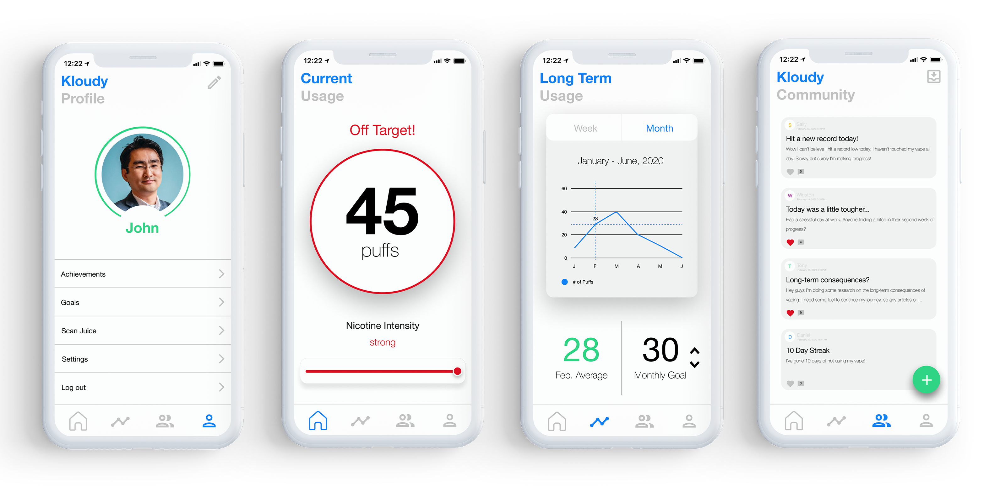

Kloudy
User Experience / User Interface Design
Many people who try to quit smoking transfer from traditional cigarettes to E-cigarettes, vapes or other equivalent products. These new “tools” claim to contain less nicotine and be less harmful to the body. However, without accountability, smokers can be consuming the same, if not more, amount of nicotine.
The Kloudy Vape and application act as accountability tools for users, as they provide users their daily nicotine consumption, the frequency of vaping sessions, and the times of when they smoke. With all the collected information from the Kloudy vape, the app creates progress reports, hence providing users an effective and measurable way of quitting their habit. Furthermore to increase the engagement and likeliness of quitting smoking permanently we added gamification features and a social network.
- Roles
- Team Members
- Timeframe
- Category
- Tools
- Researcher / UX Designer / User Test Facilitator
- Michael Chan / Anusha Champaneria / Kulsoom Waqar
- Four Months
- UX / UI / Information Design
- Balsamiq / InVision / Figma / Adobe XD / Illustrator / Photoshop
The Problem
Smokers trying to quit their habit through vaping, cannot accurately measure their progress.
Research
Market Research
Prior to this project, I could not find similar products to the Kloudy Vape and Application.
However, since this project has come out, Juul, one of the world’s largest vape brands has created an application to track user nicotine consumption. There are other traditional methods of quitting smoking on the market, such as using nicotine patches or gum (i.e. Nicorette) with lower doses over time.
Quantitative Research
According to a 2018 Canadian Community Health Survey it is estimated that there are over 5 million current smokers living in Canada as of 2017, from these 5 million smokers, 68.0% of them wanted to quit.
Qualitative Research
My group and I conducted over twenty interviews, asking what users would like to see in our vape and application. Our interviewees were University of Toronto students, that all had over 1+ years of actively vaping.
Sample Questions Included:
“Why do you vape? Is it for leisure, for the purpose of quitting smoking, etc.?”
“How do you measure your progress of being less nicotine dependent?”
“What would you like to potentially see in our product?”
Core Findings
Below are direct quotes from our user interviews:
“Although I can see the nicotine percentage in a single juul pod, I want to see my overall nicotine consumption in an accurate manner.”
“The ability to see the progress of my immediate and long-term goals, would motivate me to quit smoking altogether. Small goals such as decreasing my vaping sessions to twenty a day, would motivate me to complete my long term goal of only consuming 10 mg of nicotine a month.”
“The Kloudy application should have a socialization feature, users would be able to interact with other like-minded individuals looking to quit smoking. A successful community will result in accountability partners and add gamification aspect to their journey.”
What the Users Wanted
I summarized the most significant needs from each user.
Application Functions
- View Current Usage
- View Short-Term Goals
- View Long-Term Goals
- Kloudy Community
Vape Functions
- Pair to application using Bluetooth
- Simple LCD Screen, displaying information such as battery life, # of vaping sessions, and nicotine intensity
- Traditional shape of a vape
Users' Flow

I wanted interactions with our application to be smooth and intuitive as possible. Therefore, I created a low-fidelity user flow of a typical vaper. This helped me to understand what iterations were significant and where improvements could be made.
User Testing
University of Toronto students volunteered to test our prototypes.
I realized the need for candid feedback from users as I presented them with tasks (i.e. pairing the Kloudy vape) involving our low to high-fidelity prototypes. The usability tests included thinking aloud protocols and keystroke recordings as they interacted with our product.
Evaluating these tests helped me to identify design opportunities within the application and the vape product.
Product Design Iterations
Takeaways from our Low to High-Fidelity Prototypes
- Placement of Power Button
- Bluetooth Indicator
- Battery Percentage
- Nicotine Intensity
- "Sessions" Jargon
Users suggested to place the power button at the top of the vape. Its placement on the side of the vape, resulted in an inconvenient grip for users
The LCD screen of the vape did not have a Bluetooth icon. Users wanted a lit up Bluetooth icon on the screen, once they were successfully paired to the app.
Users wanted the percentage of the battery life, rather than just the battery icon.
Users found the 3 level were too simple to represent the nicotine intensity. A 5 level bar, showing the actual percentage of the nicotine intensity would have been a better representation.
Many users were confused about the "Sessions" jargon. We had to explain to our users, that a session was a "drag" of 1 to 3 seconds from the vape.
Application Design Iterations
General Takeaways from our Low to High-Fidelity Prototypes
Our inital high-fidelity mockup did not look realistic neither presentable on the App Store. For our next iteration (shown below), I decided to completely redesign the aesthetics of the app. I focused on the core functions of the application and took more of a minimal approach. An example of this was to transform the hamburger navigation menu to an easily accessible navigation bar at the bottom of the screen. The bar allowed users to easily switch between pages.
Specific Takeaways from our Low to High-Fidelity Prototypes
- Settings
- Current Usage
- Long-Term Usage
- Community Page
In our first prototype, we did not have a Settings page. We intergrated a settings page into the profile page.
Users wanted to see graphic visualizations of their progress (i.e. # of targeted puffs).
Users loved the ability of seeing their long-term progress. They also wanted the ability to view and edit goals directly from the page.
The majority of our users gave our "Community" page high praise. I added emphasis on the main CTA button (creating a post) by adding a strong shadow to the button.
Conclusion
Self-Reflection
I learned a lot in this four month long project.
It made me realize the important concept of trial and error. Before this project, I believed in the naïve notion that designing a product would be a linear process. Jumping between development stages, shifting my focus, and comparing results, led to a more useful and intuitive Kloudy vape and application.
Project Limitations and Next Steps
Due to this project’s time constraint of four months, we did not have enough time to do more user testing. I would have loved to conduct more A/B tests and hear additional participatory feedback. If I were to do this project again I would have put more of an emphasis on the research component rather than the execution process.